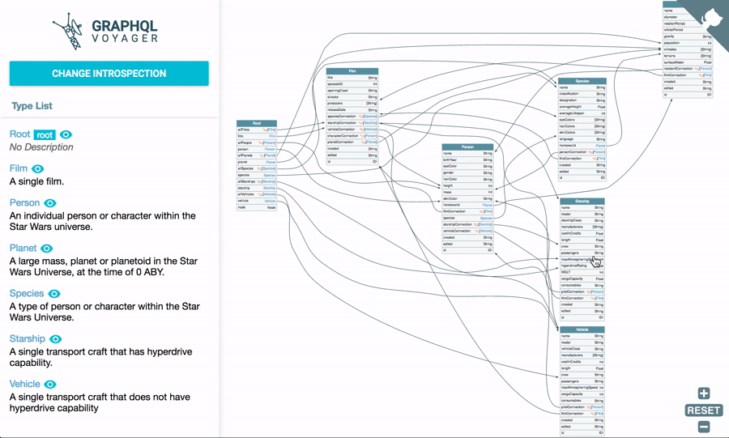

Nie chcę robić innego API niż GraphQLowe...
...a mój frontendowiec nie chce się z innym integrować.
O mnie
- zapaleniec GraphQL'owy
- dotnet/devops@iteo
- po godzinach buduję dom
- ojciec dwójki kotów
Agenda
- Czym jest GraphQL?
- Po co to stosować?
- Dostępne narzędzia?
- Czy GraphQL jest wydajny?
-
Jak zrobić to dobrze?
- Zarządzanie błędami
- Live data (subskrypcje)
- Wersjonowanie
- Security
- Mikroserwisy
Dla kogo to?
-
Server-side
- Hot Chocolate (dotnet)
- Apollo server (js)
- Graphene (python)
-
Client-side
- Strawberry Shake (dotnet)
- Apollo client (js)
- Relay (js)
GraphQL...
to język zapytań do twojego API
to specyfikacja - nie framework
posiada system typów...
GraphQL w trzech krokach
type Project {
name: String
tagline: String
}
type Query {
projects: [Project]
}
{
project(name: "GraphQL") {
tagline
}
}
{
"project": {
"tagline": "A query language for APIs"
}
}
Podział na operacje:
- Query - GET
- Mutation - POST / PUT / PATCH
- Subscription - websockets
Po co to stosować?

Query per widok
query {
pets {
photoUrl
name
}
}
query {
pets {
name
vaccinations {
isVaccinationValid
vaccinatedAt
}
appointments {
nextBloodTestDate
}
}
}
query {
pet(petId: 1) {
name
left: bloodTestsResults(at: "17.11.21") {
whiteBloodCells
lymphocytes
notes
}
right: bloodTestsResults(at: "17.06.21") {
whiteBloodCells
lymphocytes
notes
}
}
}
A co jeśli to 3 różne aplikacje?
Większa odporność na błędy - system typów
{
"firstName": "Imbir",
"lastName": "Pazurek"
}
{
"firstName": "Imbir",
"lastName": "Pazurek",
"nonExistantField": 123
}
{
"fitNme": "Imbir",
"lsatNmea": "Pazurek"
}
Tooling
GraphQL Voyager
GraphQL Playground

Code gen
Na przykładzie Apollo CodeGen / Strawberry Shake- Pobierz scheme
- Napisz zapytania
- Zestaw zapytania ze schematem
- Wygeneruj typy
- Używaj
Czy GraphQL jest wydajny?
Kilka operacji w ramach jednego żądania HTTP
query {
a: pets {
name
}
b: medicines {
price
}
}
Overfetching i Underfetching
Resolver'y
query {
pets {
name
vaccinations {
isVaccinationValid
vaccinatedAt
}
}
}
DataLoader (n+1)
query {
pets {
id
name
ownerId
owner {
id
name
}
}
}
query GetQrCode {
qrCode(for: "BITAD2021") {
imgPath
}
}
Jak zrobić to dobrze?
200 OK - Zarządzanie błędami
Źródło: https://sachee.medium.com/200-ok-error-handling-in-graphql-7ec869aec9bc
{
pet(species: "Cat") {
id
name
}
}
{
"data": {
"pet": null
},
"errors": [
{ "path": [ "pet" ],
"locations": [ { "line": 2, "column": 3 } ],
"extensions": {
"message": "Object not found",
"type": 2
}
}
]
}
- Wszystkie błędy traktowane są tak samo
- Nie wiadomo skąd błąd pochodzi
- Czy powieniem zareagować?
Error =/= Result
- Internal Server Error
- Unavailable In Country
- Pet Not Found
union PetResult = Pet | UnavailableInCountry | PetNotFound
query {
__typename
pet(species: "Cat") {
... on Pet {
id
name
}
... on UnavailableInCountry {
reason
species
}
}
}
Live data (subskrypcje)
type Message {
sentBy: String!
sentAt: DateTime!
value: String!
}
type Subscription {
messageAdded() : Message!
}
subscription OnMessageSend {
messageAdded {
sentBy
sentAt
value
}
}
Wersjonowanie
GraphQL DoctorSecurity & Performance
- Authorization & Authentication
- Depth limiting
- Operation Complexity
- (Automatic) Persisted Queries
Mikroserwisy
API Gateway
Stitching / Federation
- Łączenie wielu usług poprzez zszywanie schematów
- Możliwość modyfikacji typów w locie
- Możliwość rozszerzania typów
type Pet {
id: ID!
ownerId: ID!
name: String!
}
extend type Pet {
owner: Client @delegate(schema:"clients",
path: "client(id: $fields:ownerId)")
}
Kiedy się sprawdzi?
ZAWSZE, ale szczególnie w przypadku gdy:
- transfer ma znaczenie
- otwarte API
- podobne widoki
- konfigurowalne widoki / raporty
- jako Gateway dla wielu usług
query GetQuestionsAndLinks {
questions {
... on AnyQuestion {
answer
}
... on NoQuestions {
sadFrogUrl
}
}
links {
url
}
}
Co posiada system typów?
Typy skalarne
type Project {
id: ID!
tagline: String
contributors: [User]
}
NonNull
type Project {
id: ID!
tagline: String
contributors: [User]
}
Listy
type Project {
id: ID!
tagline: String
contributors: [User]
listOfNonNulls: [User!]
nonNullableList: [User]!
superList: [User!]!
}
Interfejsy
interface Pet {
id: ID!
name: String
legsCount: Int
}
type Snake implements Pet {
id: ID!
name: String
legsCount: Int
length: Int!
}
type Cat implements Pet {
id: ID!
name: String
legsCount: Int
tailLength: Int!
}
Union types
union SearchResult = Pet | Project | Country
Inline fragments
query {
search(filter: {name: {eq: "Luna"}}) {
__typename
... on Pet {
id
name
... on Cat {
tailLength
}
... on Snake {
length
}
}
... on Project {
id
name
tagline
}
}
}
Fragments
{
left: countries(filter: { code: { eq: "PL" } }) {
...comparisonFields
}
right: countries(filter: { code: { eq: "GB" } }) {
...comparisonFields
}
}
fragment comparisonFields on Country {
code
name
native
}
Dyrektywy
query getCountries($withNativeNames: Boolean!) {
countries {
code
name
native @include(if: $withNativeNames)
# @skip(if: Boolean!)
# @deprecated
# custom directives, e.g.
# @uppercase
# @unit(unit: "MILLIMETERS") etc.)
}
}
{
"withNativeNames": false
}
Input types
input CreateProjectInput {
name: String!
type: ProjectType!
}
mutation addProject {
addProject(input: { name: "GraphQL intro", type: "AGILE" }) {
id
}
}
mutation addProject($input: CreateProjectInput!) {
addProject(input: $input) {
id
}
}
{
"input": {
"name":"GraphQL intro",
"type": "AGILE"
}
}